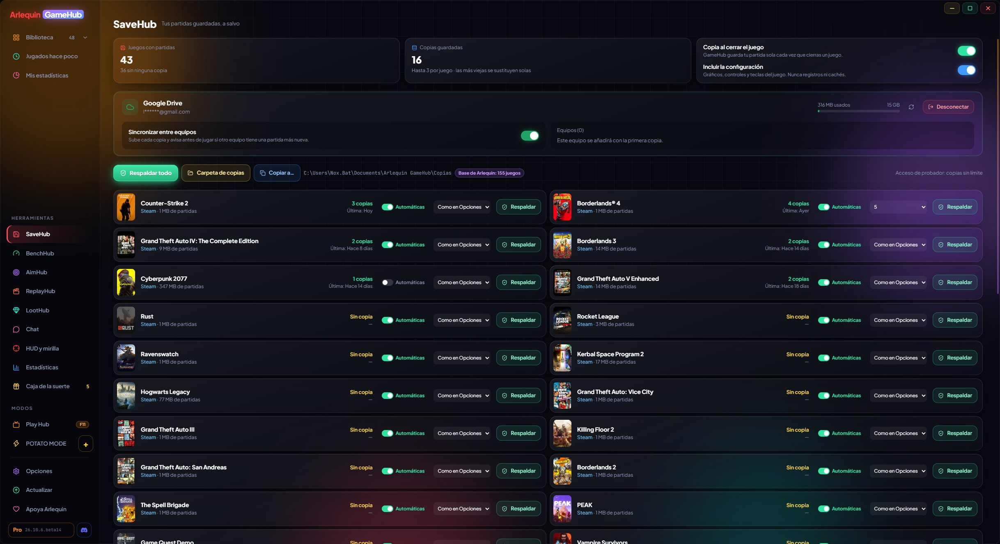

あなたのセーブデータを、いつも安全に
SaveHubは、GameHubの中でセーブデータを守る機能です。ゲームを閉じるたびに各セーブをバックアップし、PC上でも自分のクラウドからでも、ワンクリックで元に戻せます。

自動バックアップ
ゲームを閉じるたびに、GameHubがセーブデータをバックアップします。覚えておく必要はありません。
ゲームを閉じると、GameHubはそのセーブデータを圧縮して、指定したフォルダー(別のドライブや、すでにクラウドで同期しているフォルダーがおすすめ)にバックアップします。ゲームの設定(グラフィック、操作、キー)や、一部のゲームがWindowsレジストリに保存するセーブデータもバックアップできます。
ログやキャッシュ(多くのゲームが生成するシェーダーキャッシュなど)は一切バックアップせず、大事なものだけを保存します。
MMOやサバイバルゲームなど何時間も開いたままにするゲームでは、ArlequinProなら15分、30分、60分ごとにセッション中のバックアップもできます。
ゲームごとに「自動」スイッチがあり、セーブフォルダーごとに「コピー」スイッチがあります。ゲームのセーブデータが250 MBを超えると警告が出るので、バックアップするかどうかを選べます。また、バックアップを固定すれば削除されません。
直接ダウンロード版のみ EmuHubのゲーム機ゲームのセーブデータとステートセーブもバックアップし、ArlequinProなら自動でステートセーブも作成します。
使い方
- 自動で動作するので、設定は必要ありません。
- ゲームのページの「今すぐバックアップ」で、すぐにバックアップを作成します。
- SaveHubの「すべてバックアップ」で、すべてのゲームをバックアップします。
破損したセーブデータからの保護
バックアップが失敗しても、正常なバックアップは失われません。
自動バックアップが直前のものよりずっと小さくなった場合(ゲームが正しく終了しなかった、セーブデータが破損したなど)、GameHubはそれまでの正常なバックアップを削除せず、新しいものと一緒に保持します。
ゲームごとに複数のバックアップを保持します(ArlequinFreeでは3つ、ArlequinProでは標準で5つ、最大10個)。上限を超えると、いちばん古いものから削除されます。
使い方
- 標準でオンです。オプション → SaveHubで変更できます。
- GameHubは、ゲームが正しく終了しなかった(フリーズやクラッシュ)ことを検知します。そのバックアップには印が付き、直前のバックアップが固定されて戻れるようになり、ゲームを閉じたときにセーブデータが無事か確認されます。無事でなければ、直前のものを復元します。
- SaveHubは、今月プレイしたのに最新のセーブをバックアップしていないゲームを知らせ、「今すぐバックアップ」を表示します。
復元とバックアップの持ち運び
ワンクリックで好きなバックアップに戻したり、USBメモリーに持ち出したりできます。
各ゲームのページにバックアップの一覧(いつ、なぜ作られたか:ゲームを閉じたとき、手動など)が表示され、どれでも復元できます。復元する前に、間違えたときのために、現在の状態をGameHubが保管します。
「コピー先…」で、すべてのバックアップ、各ゲームの最新のもの、ランチャーのないゲームのもの、特定のゲームのものを、別のフォルダーやUSBメモリーにコピーできます。
復元の途中で失敗した場合、GameHubは元に戻し、セーブデータをもとの状態のままにします。
復元の前に、GameHubはバックアップが完全かどうかを確認します。壊れている場合は、何も変更されません。
使い方
- ゲームのページ → 保存済みセーブデータ → 復元。
- SaveHub → 「コピー先…」。
セーブスロット
1つしかセーブできないゲームでも、複数のセーブデータを管理できます。ArlequinProで利用できます。
ゲームによっては、セーブが1つしかありません。最初からやり直したり、他の人にPCで遊んでもらったりすると、自分のセーブを失ってしまいます。セーブスロットなら、ゲームごとに最大10個のセーブを持ち、ワンクリックで切り替えられます。
新しいスロットは、最初から始めることも、使用中のセーブのコピーから始めることもできます。切り替えるとき、GameHubはまず現在のセーブをそのスロットに保管し、問題がないか確認し、失敗した場合はすべてをもとの状態に戻します。ゲームの設定は変わりません。
クラウドを接続していれば、スロットもクラウドに保存され、すべてのPCで使えます。
使い方
- ゲームのページ → 保存済みセーブデータ → セーブスロット。
- ゲームを閉じた状態で「スロット2」をクリックし、開始方法を選びます。
自分のクラウドにセーブデータを保存
Google Drive、OneDrive、Dropboxを接続して、セーブデータを別のPCに持っていけます。
バックアップはそれぞれ、クラウド内のGameHubフォルダーにアップロードされ、ほかのファイルには一切触れません。バックアップを別のPCに持ってくると、Windowsのユーザー名が違っていても、ゲームが別のドライブにあっても、GameHubがそのPCに合わせて調整します。
ArlequinFreeでは、1台のPCからバックアップがクラウドにアップロードされます(PCを変える場合は、30日に1回、新しいPCに切り替えられます)。どのPCからでもクラウドの内容を確認して、手動でバックアップを復元できます。ArlequinProでは、すべてのPCでセーブデータが自動で同期され、別のPCにより新しいセーブがあるとGameHubが知らせます。
クラウドはあなたのものです。Arlequinは独自のサーバーにセーブデータを保存しません。各サービスの公式ページでサインインするので、GameHubがパスワードを見ることはありません。
使い方
- SaveHubで、Google Drive、OneDrive、Dropboxのいずれかをクリックしてサインインします。
- それ以降、バックアップは自動でアップロードされます。
- 2台のPCが同時にアップロードしても、上書きし合うことはなくなりました。クラウドがいっぱいの場合やセッションの期限が切れた場合も、はっきり知らせます。
各ゲームの保存場所を把握
知らないものは、プレイしながら学習します。
ゲームごとにセーブの保存場所は異なります(ドキュメント、AppData、ゲームフォルダー、レジストリなど)。GameHubは、各ストアがPC上に保持している情報(例:Steamのクラウドのルール)とコミュニティのデータベースから把握しています。
分からない場合は、プレイ中にゲームが書き込むファイルを監視して、セーブフォルダーを学習します。複数のゲームが共有するフォルダー(Call of Dutyなど)も検出するので、セーブデータが混ざることはありません。フォルダーは手動で追加することもできます。
ゲームのエンジン(Unity、Unreal、Ren'Py、RPG Maker、GameMaker、Godot)やストア(GOGクラウド、Xbox / Game Pass、Ubisoft Connect)ごとに、より多くのセーブを見つけます。専用ランチャーから起動するゲーム(GTA IVなど)にも対応し、他のプログラムのフォルダーやRockstarの共有フォルダーをセーブと間違えることもありません。ゲームのページで、各フォルダーの由来が確認できます。
保存場所が分からないゲームは、名前とインストールフォルダー名をもとに、よくある場所(My Games、ドキュメント、Saved Games、AppData。パブリッシャーのフォルダー内も含む)から、設定とあわせてフォルダーを探します。他のプログラムのフォルダーや、クラッシュレポートやキャッシュしかないフォルダーは対象外です。
使い方
- ゲームのページ → 保存済みセーブデータ → 「フォルダーを追加」。
あなた好みに
SaveHubのすべての設定は、オプション → SaveHubで行います。
- バックアップフォルダー(開くこともできます)。
- ゲームを閉じたときのバックアップと、設定を含めるかどうか。
- 破損したセーブデータからの保護。
- ゲームごとに保持するバックアップ数と、プレイ中のバックアップ。
- 圧縮:高速、標準、最大(容量は小さくなりますが、少し時間がかかります)。
- 「バックアップしない」:バックアップに含めたくないファイルやフォルダー(例:
*.mp4やScreenshots)。
使い方
- オプション → SaveHub。